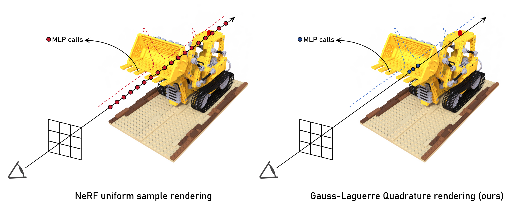
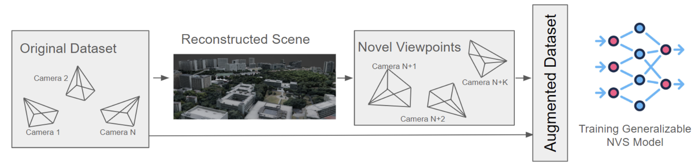
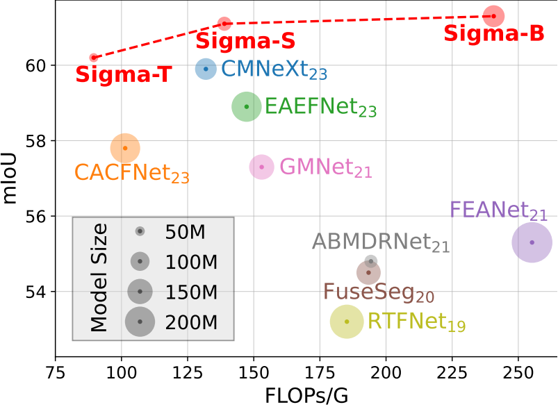
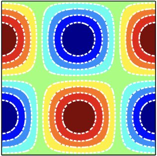

|
Silong Yong
I am a master student in Robotics Institute, Carnegie Mellon University advised by Prof. Katia Sycara.
I got my Bachelor's degree in Automation from Tsinghua University in 2023.
My research interests lie in 3D computer vision, robotics and graphics.
Specifically, I am interested in designing algorithms that model the 3D world in a more natural and sophisticated way, benefitting downstream usages such as robotics and graphics.
Email /
Github /
Google Scholar
|

|
|

|
GL-NeRF: Gauss-Laguerre Quadrature Enables Training-Free NeRF Acceleration
Silong Yong,
Yaqi Xie,
Simon Stepputtis,
Katia Sycara
NeurIPS 2024
CVPR 2024 Workshop on Neural Rendering Intelligence
[arXiv preprint]
[workshop version]
[Project]
[Code]
|
|

|
Aug3D: Augmenting Large Scale Outdoor Datasets for Generalizable Novel View Synthesis
Aditya Rauniyar*,
Omar Alama*,
Silong Yong,
Katia Sycara,
Sebastian Scherer,
IROS 2024 Workshop on Collecting, Managing and Utilizing Data through Embodied Robots
[paper]
|
|

|
Sigma: Siamese Mamba Network for Multi-Modal Semantic Segmentation
Zifu Wan,
Pingping Zhang,
Yuhao Wang,
Silong Yong,
Simon Stepputtis,
Katia Sycara,
Yaqi Xie
WACV 2025
[arXiv preprint]
[paper]
[Code]
|
|
|
An Embodied Generalist Agent in 3D World
Jiangyong Huang*,
Silong Yong*,
Xiaojian Ma*,
Xiongkun Linghu*,
Puhao Li,
Yan Wang,
Qing Li,
Song-Chun Zhu,
Baoxiong Jia,
Siyuan Huang
ICML 2024
[arXiv preprint]
[paper]
[Project]
[Code]
|
|
|
SQA3D: Situated Question Answering in 3D Scenes
Xiaojian Ma*,
Silong Yong*,
Zilong Zheng,
Qing Li,
Yitao Liang,
Song-Chun Zhu,
Siyuan Huang
ICLR 2023
[arXiv preprint]
[paper]
[arXiv]
[Project]
[Code]
|
|

|
A low-storage adjoint lattice Boltzmann method for the control of incompressible flows
Silong Yong,
Weifeng Zhao,
Physics of Fluids, 2022
[paper]
|
|
Carnegie Mellon University, USA
2023.08 - Now
Graduate Student
Advisor: Prof. Katia Sycara
|
 |
Beijing Institute for General Artificial Intelligence(BIGAI), China
2021.09 - 2023.06
Research Intern
Advisor: Dr. Xiaojian Ma & Dr. Siyuan Huang
|
 |
Tsinghua University, China
2019.08 - 2023.06
Undergraduate Student
|
|